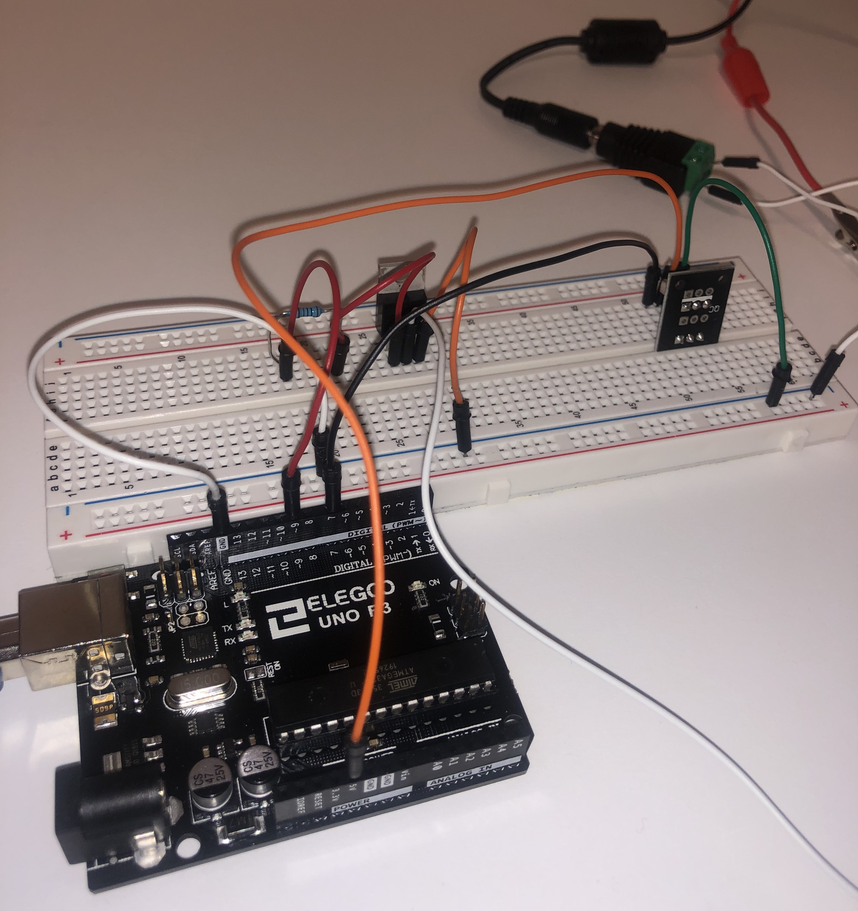
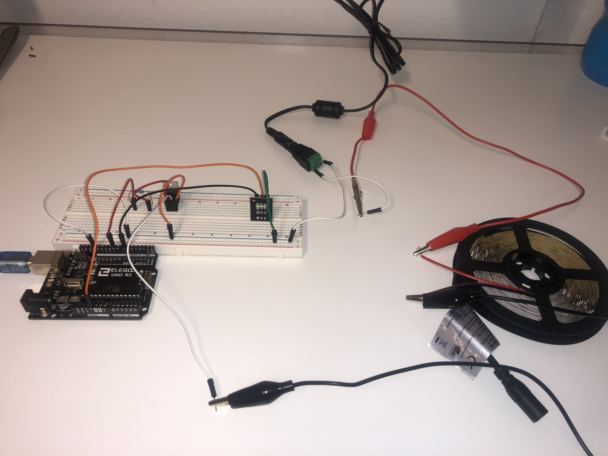
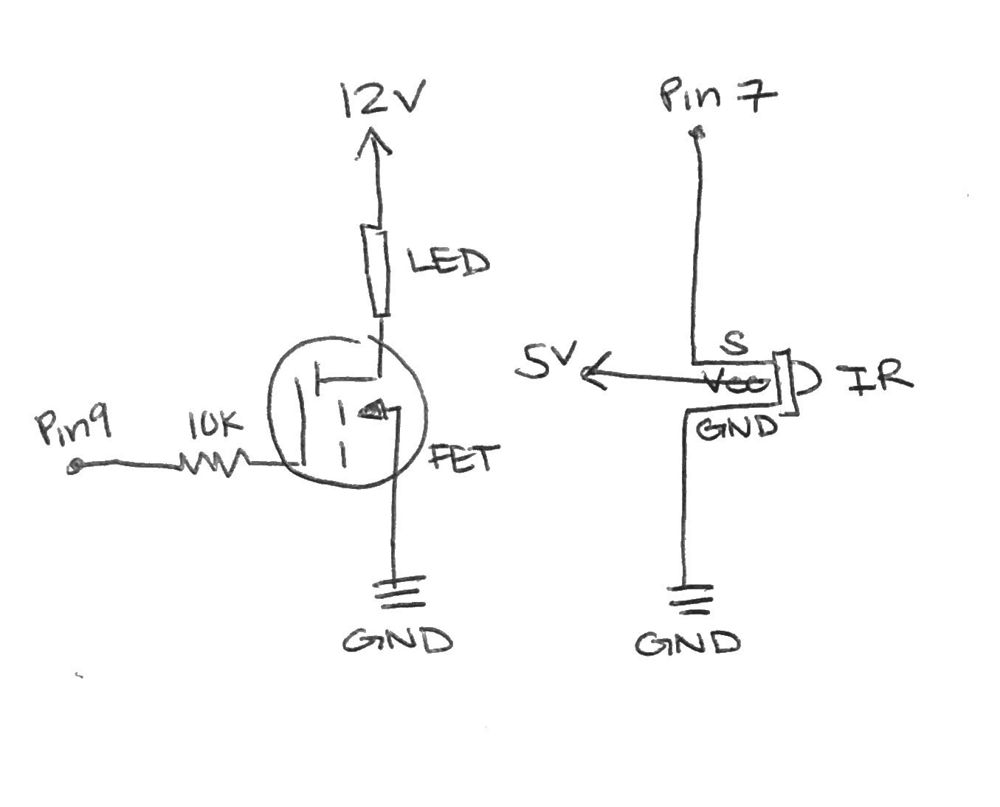
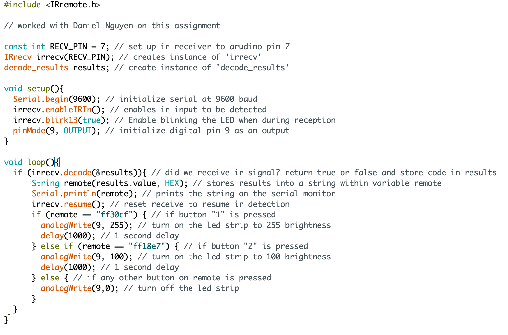

Assignment 4: High(er) voltage and transistors!
"Create a schematic, circuit, and code that uses a transistor to control load power separate from logic power. You have to use analogWrite(), a high-load output device, and an input sensor that uses a library."
Higher voltage and transistor demo:

This is a gif showing how the circuit works when assembled. The led strips is controlled by the remote. When "1" is pressed, the led strips is at max brightness. When "2" is pressed, the led strips will be at half brightness. When any other button is pressed the led strips will turn off.
Circuit diagram:


The system has two parts where one connects the mosfet transistor with the led strips associated with digital pin 9 and the other one is the infrared sensor associated with digital pin 7. The LED strip will light on/off depending on which button is pressed on the remote.
Schematic:

This is a schematic of my circuit. Calculations and resistor choices are described below.
Calculations:
Calculating current for LED strip I used:
White LEDS ~3.6 voltage drop
3 LED per strip x 3.6V drop = 10.8V
Power supply 12v, so 1.2v drop across resistor
Resistor marked '241' --> 240Ω resistor
Using I = V/R
1.2V/240Ω = 0.005A or 5mA
I used 300 LEDs, or 100 segments --> 0.005A * 100 = 0.5A of current for my LED strip.
I calculate the current for my LED strip knowing that each LED has a voltage drop of ~3.6V and given te 12V power supply we know that 1.2V drops across the resistor. The resistor on the LED segment says 241 so we can use the voltage and resistance knowledge to calculate the current, 0.5A.
Calculating resistance I used:
V=IR
5 = (0.04)R
R = 125Ω
For the resistor connected to the mosfet, it is derived from the fact that I/O pins have a max current of 40mA. Since the power supplied from the Arduino is 5V and the max current is 40mA, the minimum amount of resistance needed is 125Ω. However, I used a 10kΩ resistor just to be safe.
Code Snippet:

To satisfy all the conditions of the assignment, I used a N-MOSFET transistor with an external 12V power supply for the led strips. I also used a infrared sensor with the IRremote library. The analogWrite() function is used to change the brightness of the led strips using the remote where during pinMode() intitializing, the voltage is set to HIGH since pin 9 is configured as an output.